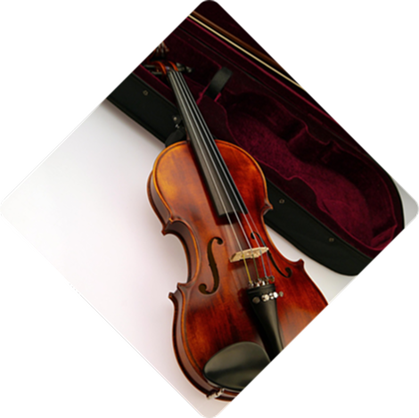
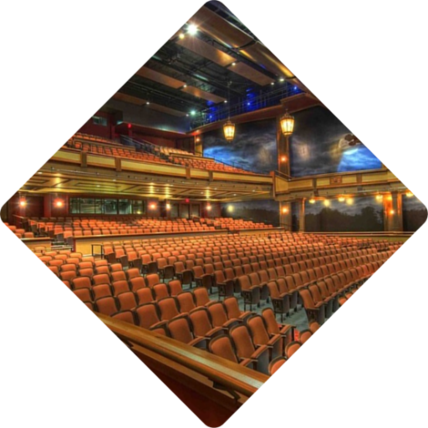

우리는 음악이 사람들을 하나 되게 만들 수 있는 강력한 힘이 있다고 믿습니다.
롯데콘서트홀은 '음악을 통한 풍요로운 삶'이라는 철학 아래, 음악과 관객 여러분들이 하나 될
수 있는 장이 되고자 합니다. 롯데월드몰이라는 접근성 높고 세련된 공간 안에서 롯데콘서트홀은
클래식 음악의 감동을 관객 여러분께 선사하고자 하며, 일상에 지친 현대인들에게 음악을 통한
휴식과 여유를 제공하고, 이전까지 경험하지 못한 새로운 음악 문화 창달에 이바지하고자 합니다.

모두를 위한 프로그램 Music for All
세계적 수준의 공연(Excellence in Concert hall) 전용 홀로서 클래식 음악의 정수를 최상의 음향과 함께 느낄 수 있는 프로그램을 만들어 갑니다.음악적 경험의 극대화(Inspiring Experience) 비교할 수 없는 시각적, 청각적 효과의 극대화를 통해 세련되고 관객 친화적인 프로그램으로 관객 여러분께 다가갑니다.새로운 시작(The New Beginning) 동시대 음악의 선구자로서 그 동안 국내에 소개되지 않았던 다채롭고 새로운 프로그램으로 공연예술계를 혁신적으로 선도하고자 합니다.

최상의 음향 State of the Art Acoustics
객석이 무대를 둘러싸 친밀감을 높인 국내 최초 빈야드 스타일(vineyard style) 콘서트홀로 모든 객석의 관객에게 최상의 음향을 선사합니다.
세계 최고 음향 설계사인 나가타 어쿠스틱스의 음향 설계 및 콘서트홀 전체를 진공 포장한 듯한 박스 인 박스 (Box-in-Box) 구조는
단 하나의 소음도 허용하지 않아 음악에만 집중할 수 있도록 해 주고, 클래식 음악에 최적화된 음향을 만들어 냅니다.
또한, 국내 대규모 클래식 전용 공간으로는 처음으로 파이프 오르간을 설치하여 롯데콘서트홀만의 특별한 음악적 경험을 제공합니다.